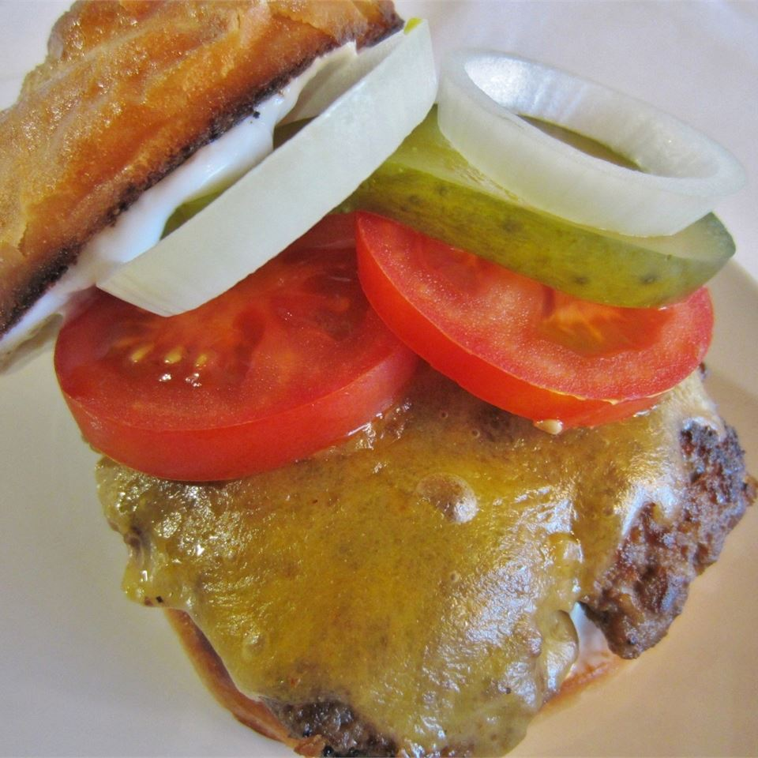

Burger recipe

The manliest burger known to man!
This is the famed Bronco burger! (trademarked)
No other burger comes close! if this ain't your favourite by the first time you try it you get a full refund!
Ingredients
- 5 fresh jalapeno peppers
- 4 pounds ground beef
- Salt and pepper to taste
- 1 egg
- Quarter cup steak sauce, (e.g Heinz 57)
- Quarter cup minced white onion
- 1 teaspoon hot pepper sauce (e.g. Tabasco)
- 1 pinch dried oregano
- 1 tablespoon Worcestershire sauce
- 1 teaspoon garlic salt
- Quarter cup crushed Fritos corn chips
- 8 large potato hamburger buns
- 8 slices pepperjack cheese
Steps
- Preheat a grill for high heat. When the grill is hot, roast the jalapeno peppers until blackened on all sides. Place in a plastic bag to sweat and loosen the blackened skin. rub the skin off, then seed if desired, and chop.
- In a large bowl, use your hands to mix together the chopped jalapenos, ground beef, salt, pepper, egg, steak sauce, onion, hot pepper sauce, oregano. Worcestershire sauce, garlic salt and Fritos. Divide into 8 balls, and flatten into patties.
- Grill patties for 10 to 15 minutes, turning once or until well done. I always drink one beer, then flip, drink another beer, then remove from the grill and place on buns. Top each one with a slice of pepperjack cheese and pig out!